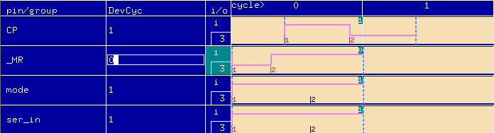

Device Cycle Edit Area
The Device Cycle Edit area is a matrix, where device cycles are displayed horizontally and test system cycles vertically. A waveform is displayed as the contents of a test system cycle that belongs to a device cycle.

In the Device Cycle Edit area, you can:
- define device cycles
- edit device cycles
- select and position edges in test system cycles
- assign shapes to edges to create waveforms.
Functional changes
- Introduced before SmarTest 6.3.2
- SmarTest 7.0.1: For Pin Scale 9G pins, the four levels (vil, vih, v3l, and v3h) are also displayed in the Device Cycle Edit area.